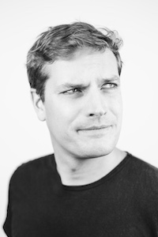

What I Focus On
I create clarity around ownership, architecture, delivery, and communication. That means helping engineers lead projects, making technical risks visible early, connecting architecture to product outcomes, and building team habits that reduce bottlenecks.
I still care deeply about code and systems, but my impact is now mostly through people, teams, decision quality, and the operating environment around the work.
A Career Built Across Domains
My career has not been linear. I spent nine years in private client finance, retrained as a software engineer, worked in startups and scale-ups, contracted briefly, co-founded a fintech business, and then grew into engineering leadership at UserTesting.
That mix shaped how I think about software: product outcomes matter, commercial context matters, and healthy teams need enough technical clarity to move quickly without creating avoidable future cost.
Finance
Investment and client judgment
My interest in investing started at 18 during an internship at Murray Asset Management, where I picked my first investment, AG Barr. After university I joined Killik & Co, qualified as a stockbroker, and spent five years advising clients on portfolios across bonds, equities, funds, and alternatives.
I later moved to Sarasin & Partners as an investment manager, helping oversee high net worth portfolios and studying for the CFA exams. Those years taught me how incentives, risk, clients, and long-term thinking shape decisions.
Technology shift
Learning the systems changing finance
The industry was being reshaped by execution-only platforms, robo-investors, and software-led customer experiences. I could see that the interesting questions were moving closer to technology, so I retrained through the General Assembly Web Development Immersive course.
Product engineering
Startups, scale-ups, and real systems
I worked at Captain AI, Drover, and Farmdrop, across Ruby, Rails, GraphQL, Docker, Neo4j, Kafka, and continuous delivery practices. The companies were at different stages, from a small pre-seed team to a larger series B company.
Those years were a compressed education in product engineering: how systems evolve, how legacy architecture shapes delivery, and how context changes what good software looks like.
Founder
Kytra
I co-founded Kytra, an investing assistant app for self-directed investors. The problem came from my stockbroking years: more people were choosing to manage their own money, but many lacked the structure to understand risk and portfolio quality.
Kytra has now been wrapped up, but it remains formative. I built product, wrote code, spoke to users, worked through commercial constraints, and learned what it really means to turn an idea into a working product.
UserTesting
Engineering and management
I joined UserTesting as a backend engineer and moved into full-stack product work across Ruby, Angular, and supporting platform services. After two years as an engineer I moved into engineering management, then into a senior engineering manager role.
Today I lead two teams across a technical domain with legacy systems, modern services, front-end applications, and several communication patterns. My work centres on building healthy teams, improving delivery, helping engineers grow, and creating conditions for better technical and product decisions.